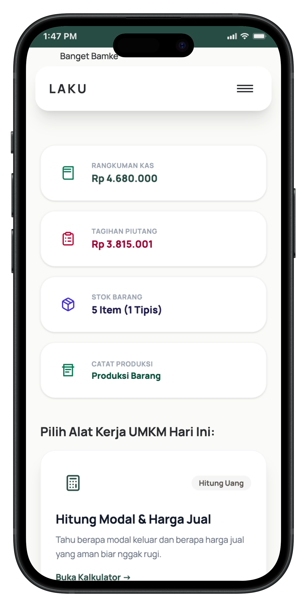
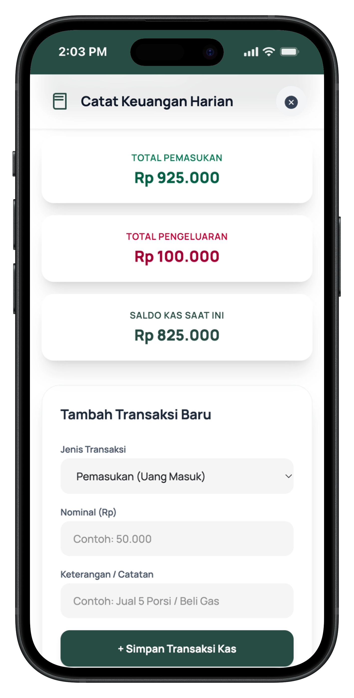

About Laku
Laku adalah pendamping keuangan harian untuk UMKM. Mulai dari memisahkan uang pribadi dan uang usaha, mencatat transaksi, hingga memahami kondisi usahamu dengan lebih jelas.
Laku membantu kamu membangun batas yang sehat antara uang untuk usaha dan uang untuk kebutuhan pribadi.

Masukkan pemasukan dan pengeluaran usaha dalam beberapa langkah sederhana.

Lihat ringkasan pemasukan, pengeluaran, dan kondisi usaha agar keputusan untuk belanja stok, menentukan harga, atau mengambil uang pribadi terasa lebih yakin.
Dampak & Masalah
Pemasukan yang terlihat besar belum tentu berarti usaha menghasilkan keuntungan. Saat uang pribadi dan uang dagang bercampur, modal sulit dijaga dan kondisi usaha menjadi tidak jelas.
Kamu tidak harus langsung memahami semua istilah keuangan. Cukup mulai dari kebiasaan kecil: memisahkan uang usaha, mencatat transaksi, dan melihat kembali kondisi usahamu setiap hari.
Solusi Laku
Laku tidak hanya menampilkan informasi, tetapi juga mengajak pengguna memahami materi melalui pembelajaran singkat dan kuis sederhana. Dengan begitu, pengguna tidak hanya memakai alat, tetapi juga memahami alasan di balik pengelolaan usaha yang baik.
Setelah belajar, pengguna dapat memakai aplikasi Laku untuk menghitung harga jual, mencatat pemasukan dan pengeluaran, melakukan simulasi laba rugi, serta mengecek kesiapan digital usahanya.
Nilai Laku
Mudah Dipahami Laku memakai bahasa yang sederhana agar pelaku UMKM dapat belajar tanpa merasa terbebani.
UMKM
Langsung Bisa Dipakai Fitur Laku dirancang untuk kebutuhan harian UMKM, mulai dari mencatat sampai menghitung laba rugi.
Aplikasi
Gunakan Aplikasi Laku untuk mencatat usaha, menghitung harga jual, memantau laba rugi, dan belajar lebih praktis dalam satu tempat.